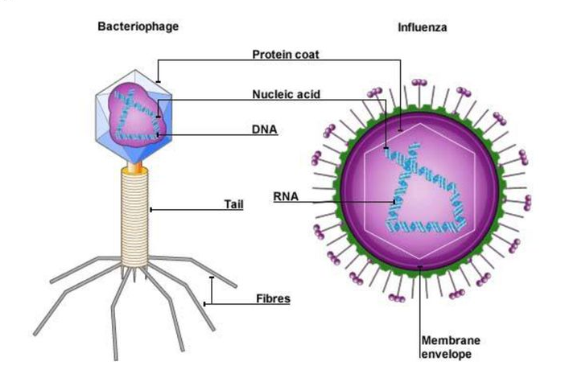

Viruses: Living or nonliving?
Reagan Smith. 9/4/2020

There are two types of anatomy of a virus, both with a strand of a nucleic acid enclosed by a protein coat. (BVB 101)
There are two types of anatomy of a virus, both with a strand of a nucleic acid enclosed by a protein coat. (BVB 101)
Viruses are a part of everyday life, especially during these times. They are classified as host-seeking pathogens ranging from the common influenza virus to the infamous coronavirus. While the general consensus in the scientific community is that viruses are not alive, it is important to understand where this line of thinking comes from and how some disagree with it.
Starting off, we need to define the characteristics of life. An excerpt from the Cambridge University Biology 1 textbook lists these seven traits: nutrition, respiration, removal of waste, movement, growth, reproduction, and homeostasis. First off, nutrition means that all living things need food in some way or another. Bacteria either directly absorb the nutrients they need or utilize the environment to make food themselves, which is known as being autotrophic. Plants are autotrophs as well and use photosynthesis to make their own food, while animals are heterotrophs, meaning they have to eat other living things to obtain energy. All living things respire as well, which is the process of breaking down their food into energy they can use. They also have to excrete the waste created by this process. Continuing on through the list, living things move in their environment; from plants rotating to face the sun to brain-eating amoeba harnessing pseudopods, all life is in motion. This movement can also be seen as living things grow. Think of a fetus growing in the room, or a flower pushing up through the soil. The goal of life is to procreate, so all organisms will reproduce via binary fission, sexual reproduction or asexual reproduction. Finally, living things need to be able to respond and adapt to their constantly changing environment to maintain stable internal conditions, otherwise called homeostasis. Organisms have the ability to regulate their temperature, pH levels, glucose levels, blood pressure, etc.
Using these parameters, we can use the requirements of life to determine if a virus is alive. According to Scientific American, in 1935, scientists first classified viruses as inert chemicals, after looking at a crystallized tobacco mosaic virus under a microscope and seeing the biochemicals it contained. However, the subject did not have any mechanism for metabolic function (respiration or breaking down nutrients). Viruses are inactive until they infect a host cell, upon which they shed their outer protective coating and use the cell’s mechanisms to reproduce. This means that the virus is unable to reproduce on its own. Microbiologist Nigel Brown, in a debate on Microbiology Society, calls a virus a “gift-wrapped nucleic acid”, referring to the DNA or RNA a virus contains.
By these qualifications, viruses appear to be non-living. However, in the same debate, another microbiologist David Bhella deems a virus “dead” or biologically inert until it is transferred to the site of replication: the cell it is infecting. The most common argument against living viruses is the fact that they cannot survive on their own and need a host cell to perform life functions. Bhella argues that the requirement of all life must be self-sustaining is hypocritical, since very few life forms are entirely independent. He points out that even humans, while very clearly defined as living, require the aid of bacteria in food digestion and would die without their help. “The only satisfactory definition of life, therefore lies in the most critical property of genetic heredity: independent evolution,” Bhella said in Microbiology Society. “Life is the manifestation of a coherent collection of genes that are competent to replicate within the niche in which they evolved.” Viruses fit the bill here.
If we define life strictly by the seven aforementioned requirements, viruses are clearly non-living. They depend heavily on a host cell to survive and reproduce, and until they “activate”, they are merely a package of proteins. However, we are beginning to question and expand our view of what life is. Does a subject have to be entirely independent? What defines the level of interaction two organisms can have before either are classified as non-living? The answer to this decades-long debate is not imperative to the study of viruses, though, and there is still much to learn from studying them. The scientific community continues to question and explore this idea all while gaining valuable insight into evolution, cell development and microscopic processes through the study of viruses.

Reagan is a junior from Sage Hill School. She is passionate about all things related to science, especially biology and medicine. She also loves being able to use her talents and knowledge to help others and make a difference in the world.